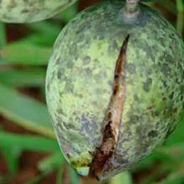

Symptoms: Leaves small with general yellowing. Affect: Fruits smaller and mature early.
Solution
Product: Macrofert 20:20:20 5gm/lit Soil/Drip: Plantex 20:20:20 5kg/acre Benefit: Helps in vegetative growth, formation of amino acids
Phosphorous deficiency
Symptoms: Some branches show die back,leaf tip necrosis and premature abscission of leaves. Affect: Retarded growth,premature dropping of older leaves.
Symptoms: Appearance of white,yellow or orange chlorotic spots in older leaves distributed irregularly over both upper and older leaves. Affect: Reduced growth and vigour,poor growth of fruits.
Solution
Product: Fertimax 00:00:50 5gm/lit, Fertimax13:00:45( 5-10gm/lit), Fertisol 3-5gm/lit Soil/Drip: Benefit: Resistance to pests and diseases,opening and closing of stomata
Calcium deficiency
Symptoms: Splliting of fruit occurs,severe deficiency leads to death of bud. Affect: Abnormal growth of young leaves and growings tips.
Symptoms: Leaf tips remain green and severe deficiency the whole leaf turns yellow. Affect: Growth is stunted.
Solution
Product: Primasulf 3-4ml/lit, fertisol 5gm/lit Soil/Drip: Benefit: Improves special character in crop
Copper deficiency
Symptoms: Shoots produce long droopy 'S' shaped branches. Affect: Shelf life of mango is decreased.
Solution
Product: Phosphocop 2-3ml/lit Soil/Drip: Benefit: Serves to intensify flavour and colour in vegetables and colour in flowers

Boron deficiency
Symptoms: Leaf becomes uneven shape. Affect: Fruit cracking flower drop.
Solution
Product: Boron 20 1gm/lit, Potabor super-2-3gm/lit Soil/Drip: Benefit: Translocation of sugars and help in pollination
Zinc deficiency
Symptoms: Symptoms are usually small irregular drooping spots. Affect: Leaves are usually smaller,thickend leaf blade brittle and show a rosette apperance.
Solution
Product: Chelamin plus1-2gm/lit Soil/Drip: Chelamin gold 0.5kg/acre Benefit: Helps in activation of enzymes
Iron deficiency
Symptoms: Leaves become pale yellow, in severe cases leaves turn to complete yellow and die back. Affect: Defoliation of leaves.
Solution
Product: Chelafer1-2gm/lit, Agrofer-1-2gm/lit Soil/Drip:Ferromag 5kg/acre, Ferromix-5kg/acre Benefit: Helps in electron transport chain and helps in photosynthesis
Manganese deficiency
Symptoms: Yellowing of younger leaves and veins remain green in color,if the deficiency is more leaves turn to brown color. Affect: Slow growth.
Solution
Product: Mn-chel- 1-2 ml/lit of water or mobomin 1 gm/lit of water Soil/Drip: Benefit: It involves wide range of enzymes process inlude hormone synthesis